Il sorgere di una nuova era
Questa storia inizia in Olanda, il 2 ottobre 1608, quando Hans Lipperhey — ottico tedesco naturalizzato olandese — presenta una richiesta di brevetto per uno strumento capace di ingrandire gli oggetti lontani: il telescopio, destinato a diffondersi rapidamente in Europa e a trasformare per sempre le capacità di osservazione astronomica.
Appena due anni dopo, nel 1610, il nuovo strumento viene rivolto anche verso il Sole. Thomas Harriot e Galileo Galilei iniziano a osservare la nostra stella, dando avvio allo studio telescopico delle sue caratteristiche. Harriot — astronomo e matematico inglese — osserva e disegna le macchie solari l'8 dicembre, nella prima testimonianza telescopica documentata del fenomeno. Le sue osservazioni, tuttavia, non verranno pubblicate e rimarranno a lungo sepolte nei suoi taccuini. Galileo Galilei — astronomo, filosofo e matematico — dopo aver appreso dell'invenzione del telescopio, ne costruisce e perfeziona autonomamente diversi esemplari. Si dedica all'osservazione dei corpi celesti e, tra il 1610 e gli anni successivi, allo studio sistematico del Sole e delle sue macchie.
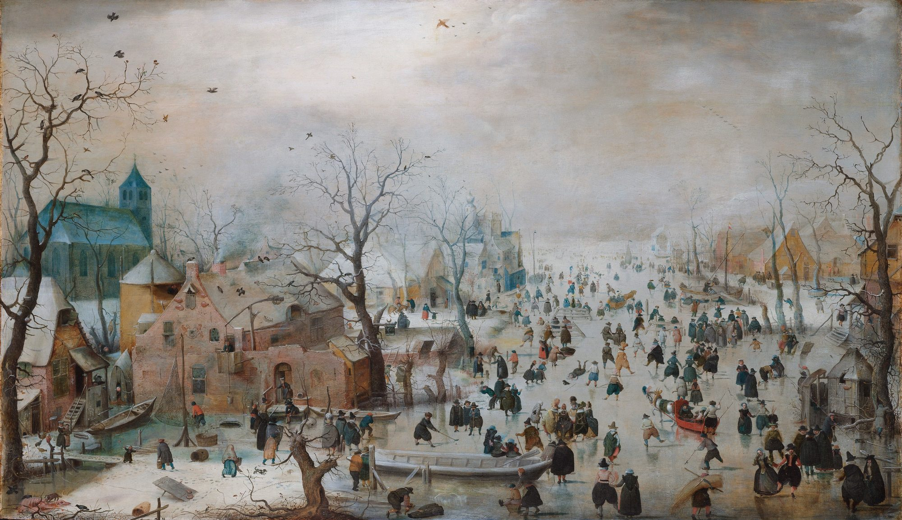
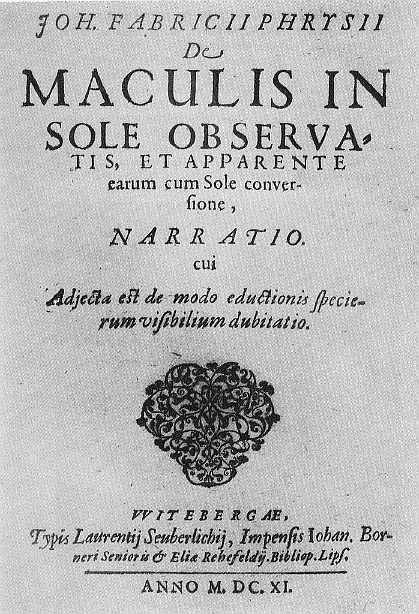
Nel frattempo, il 13 giugno 1611, Johannes Fabricius pubblica il De Maculis in Sole Observatis, et Apparente earum cum Sole Conversione Narratio ("Narrazione sulle macchie osservate sul Sole e sulla loro apparente rotazione insieme al Sole"): è la prima pubblicazione a stampa interamente dedicata alle macchie solari.
Fabricius, astronomo nato in Bassa Sassonia nel 1587, compie i suoi studi in Olanda, a Leiden, dove entra in contatto con i primi telescopi. Tornato a Osteel, in Germania, nel marzo del 1611, inizia, con la collaborazione del padre, a osservare il Sole al telescopio e con sorpresa nota che il Sole è macchiato. Le osservazioni condotte nei mesi seguenti gli permettono di capire che quelle macchie non sono ferme e immutabili, ma si spostano attraverso il disco solare e scompaiono oltre il bordo: un'evidenza che la nostra stella ruota attorno al proprio asse.
Due uomini, lo stesso disco solare, due mondi possibili: uno immutabile, l'altro vivo e mutevole.La disputa del 1612–13
Christoph Scheiner contro Galileo Galilei
Gli anni che seguono, il 1612 e il 1613, sono due anni cruciali. Nel gennaio del 1612 il gesuita Christoph Scheiner pubblica le Tres Epistolae de Maculis Solaribus Scriptae ad Marcum Welserum ("Tre lettere sulle macchie solari scritte a Marco Welser"). L'anno seguente, nell'Istoria e dimostrazioni intorno alle macchie solari, Galileo pubblica le lettere con cui annuncia la propria scoperta. Sono due opere fondamentali che offrono però due spiegazioni opposte dello stesso fenomeno.
Christoph Scheiner
Gesuita · matematico · IngolstadtFedele alle teorie aristoteliche sull'immutabilità della sfera solare, interpreta le macchie come le ombre di piccoli corpi opachi in orbita molto vicina al Sole, che proiettano la loro ombra sulla sua superficie.
Muterà opinione solo diciotto anni dopo, nella sua monumentale Rosa Ursina (1630).
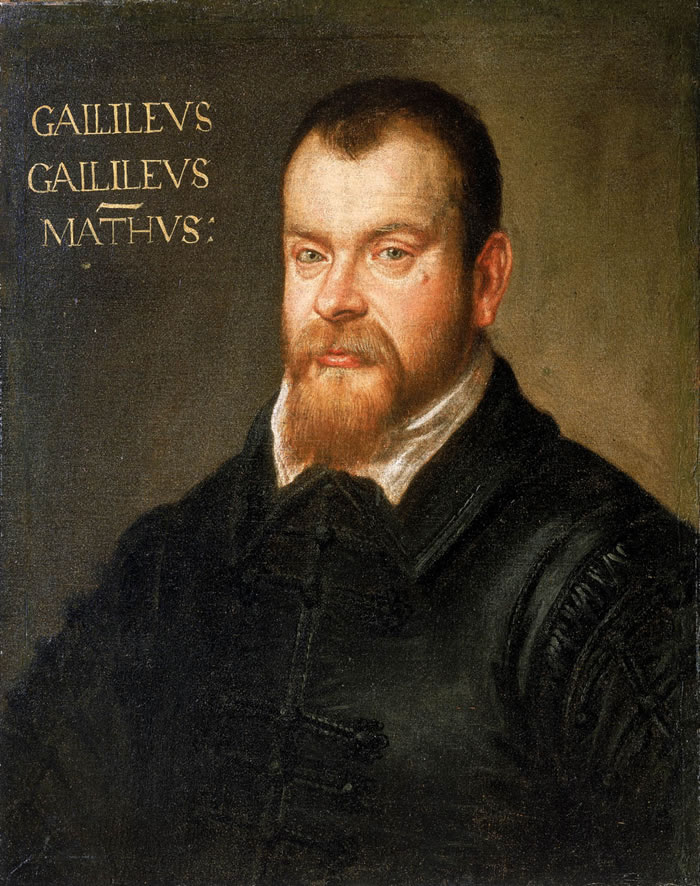
Galileo Galilei
Matematico · filosofo naturale · FirenzeInterpreta le macchie come fenomeni reali legati al Sole, variabili e presenti sulla sua superficie o nelle immediate vicinanze, pur non essendo in grado di determinarne la natura fisica.
Le interpreta come nubi o aggregati di materia relativamente piatti, associati alla superficie solare, e dal loro moto costante deduce che il Sole ruota su se stesso con velocità uniforme.
| Aspetto | Scheiner (1612) | Galileo (1613) |
|---|---|---|
| Natura delle macchie | Satelliti opachi in orbita solare | Formazioni sulla superficie o nelle sue immediate vicinanze |
| Il Sole resta perfetto? | Sì — nessuna macchia lo tocca davvero | No — le macchie ne alterano l'aspetto |
| Rotazione solare | Non necessaria alla teoria | Dedotta dal moto delle macchie |
| Esito storico | Abbandonerà questa interpretazione nel 1630 | Interpretazione sostanzialmente confermata |
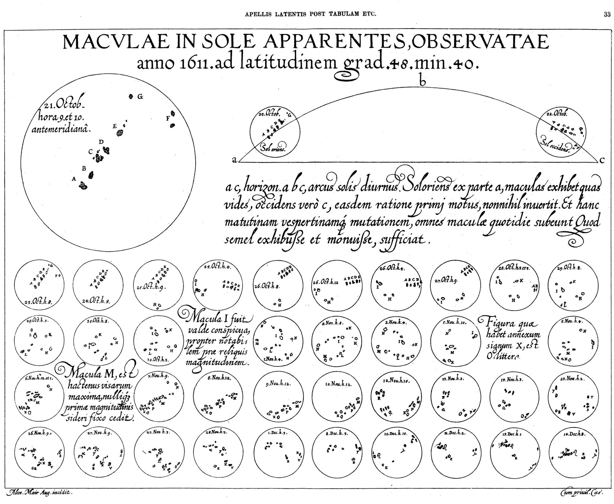
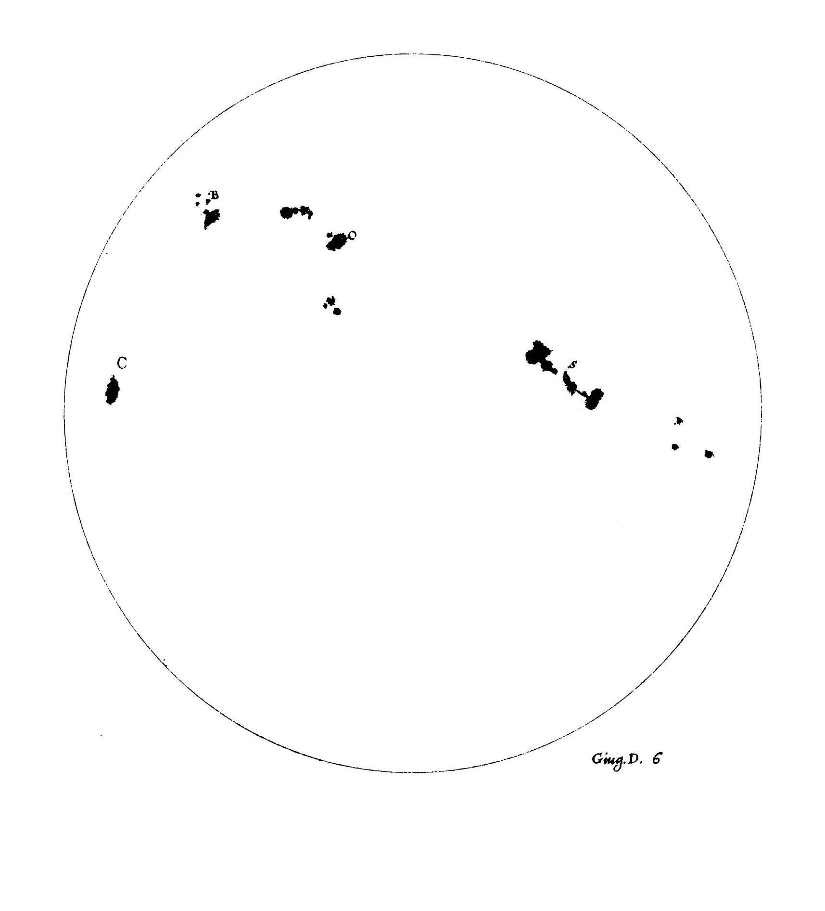
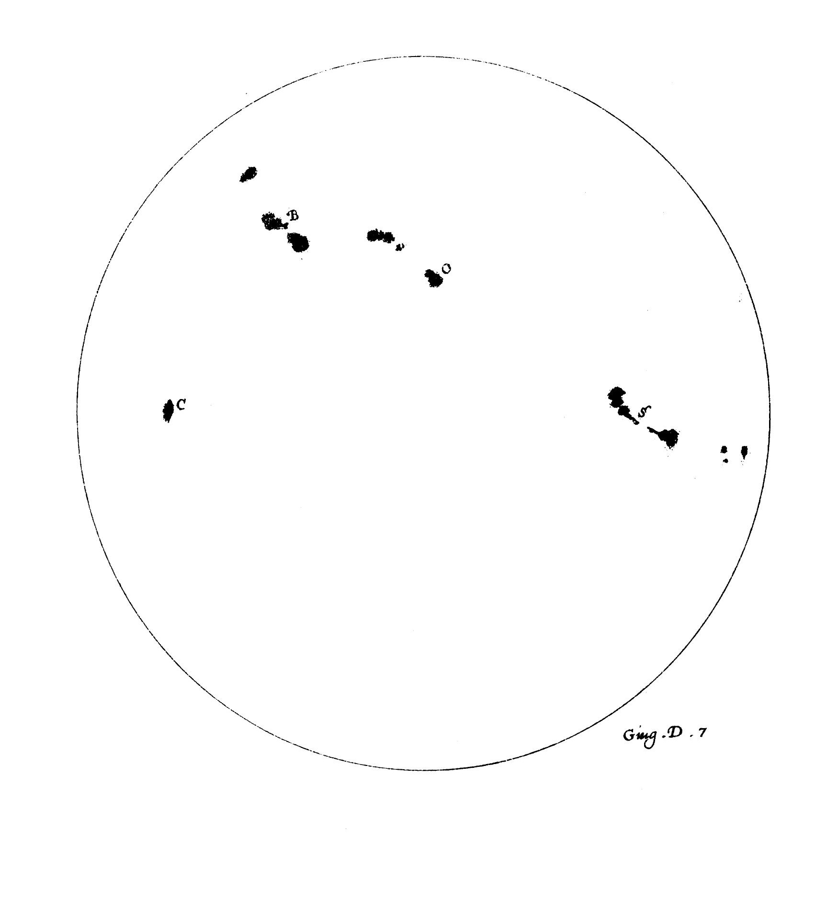
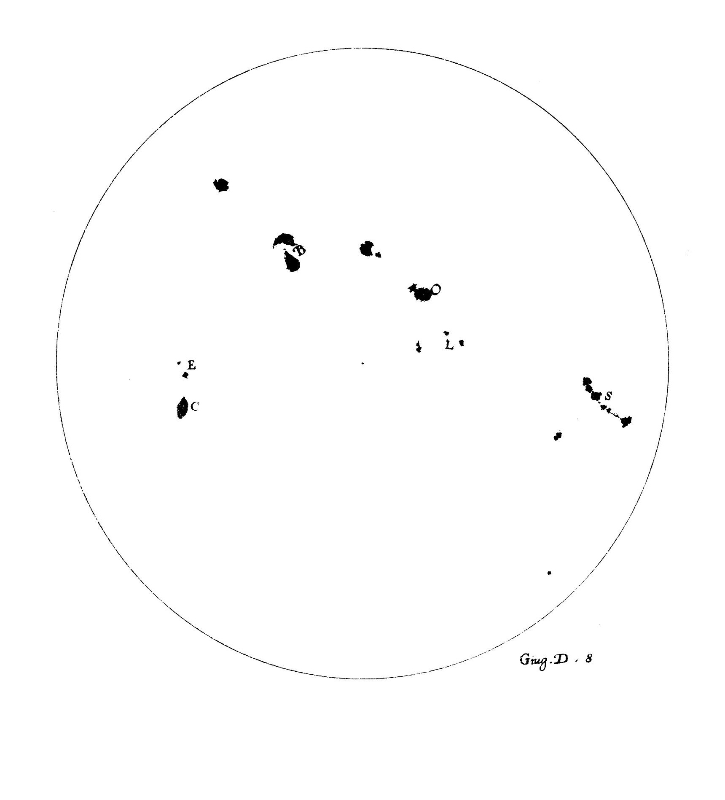
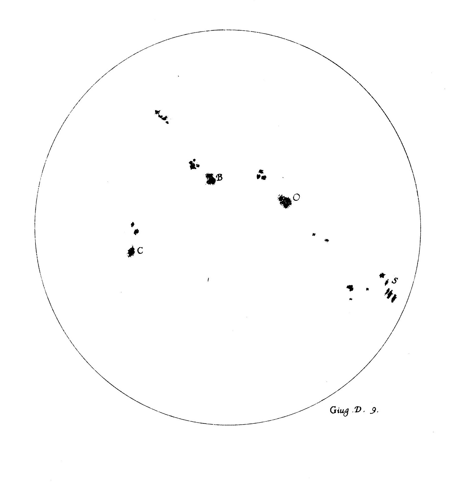
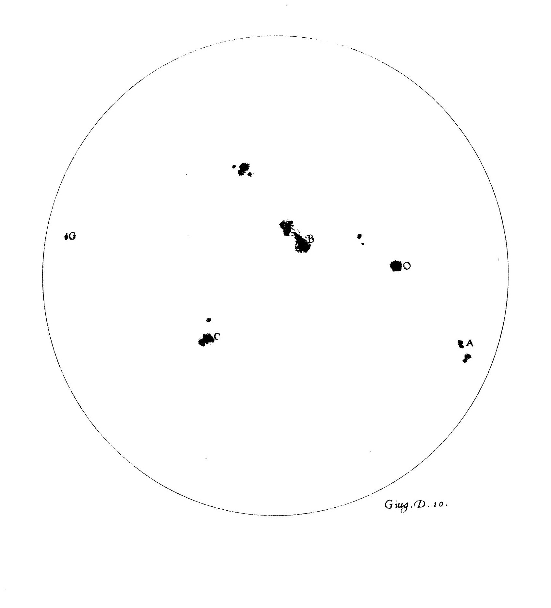
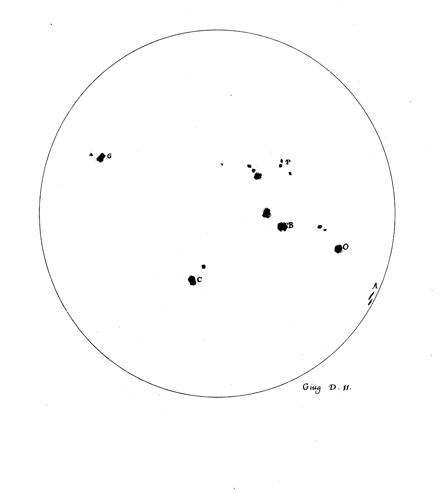
Prima dell'avvento del telescopio
Facciamo ora un passo indietro: qual era la situazione prima del Seicento?
Tra le più antiche testimonianze di macchie solari si trova quella attribuita a Teofrasto, allievo di Aristotele, nel IV secolo a.C. Numerose osservazioni sono poi riportate nelle cronache dell'Asia orientale, soprattutto cinesi, ma anche giapponesi e coreane. Alcune delle più antiche testimonianze cinesi, risalenti a circa l'800 a.C., sono state interpretate come possibili osservazioni di macchie solari. Nella letteratura occidentale, invece, i riferimenti sono molto più scarsi, forse anche a causa dell'influenza della concezione aristotelica di un mondo celeste immutabile e incorruttibile, recepita poi dalla tradizione cristiana. È significativo che molte delle poche osservazioni occidentali pre-telescopiche siano state interpretate come transiti di Venere o di Mercurio, oppure come il passaggio di ipotetici pianeti inframercuriali, ritenuti esistenti fra Mercurio e il Sole.
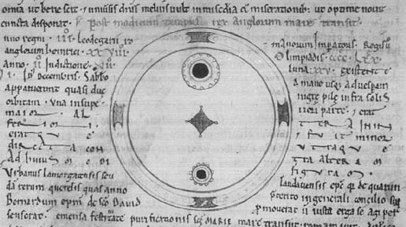
Gli anni 1128 e 1129 offrono una delle testimonianze più significative dell'attività solare osservata prima dell'invenzione del telescopio. In Occidente, la cronaca di John of Worcester conserva il più antico disegno noto di macchie solari, realizzato in occasione dell'osservazione dell'8 dicembre 1128. In Oriente, le cronache coreane e cinesi documentano nello stesso periodo un'intensa attività aurorale e nuove osservazioni di macchie solari, offrendo una preziosa testimonianza indipendente dell'attività del Sole.
Le testimonianze precedenti al Seicento mostrano dunque che le macchie solari non erano del tutto sfuggite agli osservatori del passato. Le grandi macchie potevano essere occasionalmente individuate anche senza strumenti ottici, ma le osservazioni erano sporadiche e difficili da interpretare. Mancava soprattutto la possibilità di osservarle con continuità, di registrarne sistematicamente posizione, forma ed evoluzione e di confrontare le osservazioni nel tempo. Fu la nascita del telescopio a cambiare radicalmente questa situazione: il Sole poteva finalmente diventare oggetto di osservazioni regolari e sistematiche, aprendo la strada a una nuova fase della storia dello studio delle macchie solari.
La caduta dei dogmi aristotelici
L'osservazione delle macchie solari al telescopio mette in crisi sia la secolare concezione del Sole come astro perfetto, sia — insieme ad altre osservazioni astronomiche, come le "stelle nuove" del 1572 e del 1604, oggi riconosciute come supernove e studiate rispettivamente da Tycho Brahe e Johannes Kepler — l'idea dell'immutabilità dei cieli. Secondo la cosmologia aristotelica, infatti, nei cieli non poteva verificarsi alcun cambiamento: essi erano composti della sostanza perfetta e incorruttibile, la quintessenza. Le macchie solari contribuiscono così in modo decisivo a incrinare i dogmi dell'aristotelismo cosmologico, un edificio filosofico costruito nel corso di quasi duemila anni.
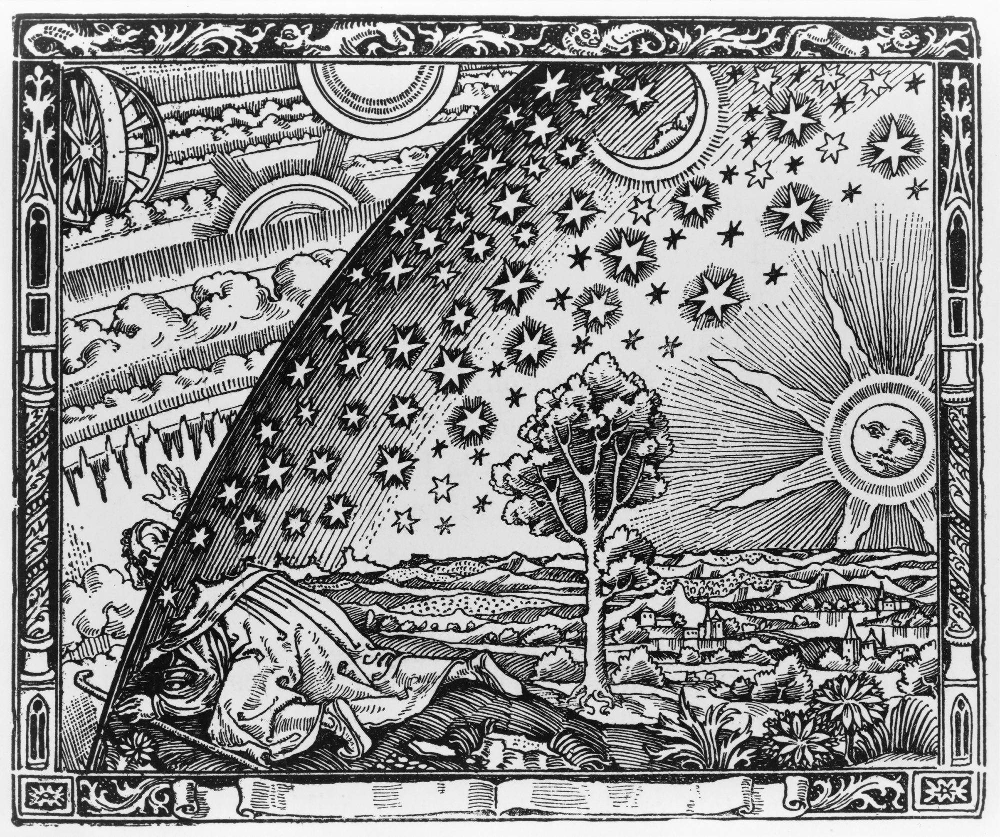
Il lungo silenzio: il minimo di Maunder
Per circa settant'anni, fra il 1645 e il 1715, gli astronomi europei registrano una drastica riduzione delle macchie solari osservate, nonostante siano ormai disponibili strumenti e tecniche osservative più evoluti rispetto all'epoca di Galileo. Le registrazioni conservate mostrano una quantità di macchie insolitamente bassa rispetto ai periodi di normale attività solare. Il fenomeno prende il nome dall'astronomo britannico Edward Walter Maunder che, insieme alla moglie e collaboratrice Annie Russell Maunder, alla fine dell'Ottocento ricostruisce e sistematizza le osservazioni storiche del periodo.
Il minimo di Maunder si colloca, in Europa, all'interno di una fase particolarmente rigida della cosiddetta "Piccola Era Glaciale". La coincidenza temporale ha alimentato l'ipotesi di un legame fra attività solare e clima terrestre, ma il rapporto di causa-effetto — quanto, cioè, la minore attività solare abbia realmente contribuito al raffreddamento, rispetto ad altri fattori come l'attività vulcanica — resta oggetto di ricerca e discussione scientifica.
Dal disegno al numero:
la scoperta del ciclo di undici anni
Per due secoli, dopo Galileo e Scheiner, le macchie solari restano un oggetto di curiosità più che di osservazione sistematica. Cambia tutto con Heinrich Schwabe, farmacista e astronomo dilettante tedesco, che fra il 1826 e il 1843 dedica al Sole moltissime giornate di osservazione, sperando in realtà di scoprire un ipotetico pianeta interno all'orbita di Mercurio, "Vulcano". Non trova alcun pianeta, ma nota che il numero delle macchie cresce e diminuisce con una periodicità di circa dieci anni, anticipando quella che oggi conosciamo come il ciclo solare di circa undici anni.
Cinque anni dopo, nel 1848, l'astronomo svizzero Rudolf Wolf compie un passo decisivo: trasforma le osservazioni delle macchie in una misura quantitativa dell'attività solare. Introduce il numero relativo delle macchie solari, oggi noto come numero di Wolf, e ricostruisce la serie storica a ritroso fino al 1749. Il lavoro di Wolf permette così di confrontare osservazioni provenienti da epoche diverse e di studiare l'andamento dell'attività solare su periodi molto più lunghi del singolo ciclo.
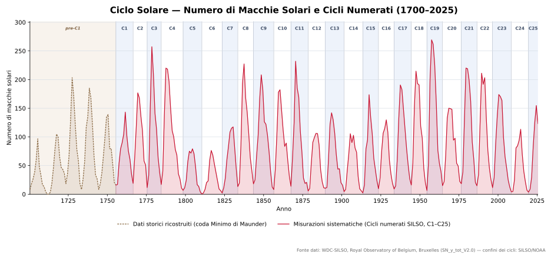
All'inizio della serie si osserva la fase finale del Minimo di Maunder (1645–1715), uno dei periodi di più bassa attività solare conosciuti. Dopo il 1715 l'attività solare aumenta progressivamente e, nel corso del Settecento, diventano riconoscibili i cicli di circa undici anni.
Tra la fine del Settecento e i primi decenni dell'Ottocento compare una nuova fase di attività relativamente debole: il Minimo di Dalton (circa 1790–1830), durante il quale diversi cicli risultano meno intensi rispetto a quelli che li precedono e li seguono.
Dalla metà dell'Ottocento l'attività solare torna a mostrare cicli più marcati. Nel corso del Novecento si susseguono cicli generalmente più intensi, fino a raggiungere quella che viene spesso indicata come la fase del massimo moderno.
La serie prosegue fino ai nostri giorni e mostra il continuo alternarsi dei cicli undecennali. Gli ultimi decenni permettono inoltre di seguire direttamente l'evoluzione dell'attività solare fino al Ciclo solare 25, iniziato nel dicembre 2019.
Un Sole magnetico
Nel 1908 l'astronomo americano George Ellery Hale, analizzando lo spettro della luce proveniente dalle macchie solari con il telescopio dell'Osservatorio di Mount Wilson, individua lo sdoppiamento delle righe spettrali previsto dall'effetto Zeeman: la prima evidenza diretta dell'esistenza di forti campi magnetici nelle regioni delle macchie. È l'inizio dell'astrofisica solare moderna: quattro secoli dopo Galileo e Scheiner, si comincia finalmente a capire cosa sono davvero le macchie.
Oggi sappiamo che le macchie sono manifestazioni di forti campi magnetici nella fotosfera solare e che la loro origine è legata alla dinamo magnetica che opera all'interno del Sole, un meccanismo descritto in modo organico nel modello proposto dall'astrofisico Horace Babcock nel 1961. Una macchia ben sviluppata presenta una regione centrale più scura, l'ombra, circondata dalla penombra. Nell'ombra il campo magnetico può raggiungere alcune migliaia di gauss. Le macchie appaiono scure perché la loro temperatura è inferiore a quella della fotosfera circostante e quindi emettono meno luce. Si presentano spesso in gruppi organizzati secondo polarità magnetiche opposte, secondo la legge delle polarità scoperta da Hale, e possono durare da poche ore a diversi mesi.
>- Fotosfera
- Lo strato del Sole da cui proviene gran parte della luce visibile che osserviamo. È la regione in cui si manifestano le macchie solari.
- Ombra
- La regione centrale e più scura di una macchia solare, dove il campo magnetico è particolarmente intenso e la temperatura è più bassa.
- Penombra
- La regione periferica, meno scura dell'ombra, caratterizzata da strutture filamentose che la circondano.
- Effetto Zeeman
- Fenomeno per cui le righe spettrali si sdoppiano o si separano in presenza di un campo magnetico, permettendo di determinarne l'intensità a distanza.
- Gauss
- Unità di misura del campo magnetico. Il campo magnetico terrestre è di circa 0,5 gauss in superficie.
- Dinamo solare
- Meccanismo attraverso cui i moti del plasma all'interno del Sole generano e rigenerano il suo campo magnetico.
Il Sole nell'era spaziale
Dalle prime osservazioni al telescopio sono ormai passati più di quattrocento anni. Con l'avvento dei satelliti e dei telescopi spaziali, la conoscenza del Sole e delle sue macchie ha fatto passi da gigante: per la prima volta è stato possibile osservarlo direttamente dallo spazio, al di sopra dell'atmosfera terrestre.
SOHO
La missione ESA/NASA Solar and Heliospheric Observatory osserva il Sole dallo spazio dal 1995, da una posizione vicina al punto di Lagrange L1 del sistema Sole-Terra. I suoi strumenti hanno permesso di studiare in dettaglio la superficie e l'atmosfera solare, contribuendo alla comprensione delle macchie, delle eruzioni e del vento solare.
Hinode e STEREO
Il satellite giapponese Hinode studia i campi magnetici e i processi energetici dell'atmosfera solare, mentre le due sonde NASA STEREO osservano il Sole da punti di vista differenti, offrendo una nuova capacità di ricostruirne molte strutture in tre dimensioni e di seguire l'evoluzione dell'attività solare oltre il semplice punto di vista terrestre.
Solar Dynamics Observatory
Il grande osservatorio NASA monitora continuamente il Sole ad altissima risoluzione, acquisendo immagini circa ogni 12 secondi in diverse lunghezze d'onda. Le sue osservazioni permettono di seguire in tempo quasi reale l'evoluzione delle macchie, dei brillamenti e delle altre strutture dell'attività solare.
Parker Solar Probe
Per la prima volta una sonda "sfiora" il Sole, entrando direttamente nella sua corona e arrivando a meno di dieci raggi solari dal centro del Sole. Parker Solar Probe misura in situ il vento solare, il campo magnetico e le particelle della corona, permettendo di studiare da vicino i processi che alimentano l'attività della nostra stella.
Solar Orbiter
La missione ESA studia il Sole da orbite sempre più inclinate rispetto all'eclittica, permettendo di osservare le regioni polari da una prospettiva mai raggiunta prima. Unisce immagini ad alta risoluzione e misure in situ del vento solare e del campo magnetico, per comprendere meglio l'origine e la propagazione dell'attività solare.
Il Sole e i suoi effetti sulla Terra
Le macchie non sono solo un fenomeno da osservare: nelle regioni attive che le ospitano si concentrano brillamenti ed eruzioni di massa coronale, tra i fenomeni più energetici del Sistema Solare. Quando queste eruzioni sono dirette verso la Terra, possono dare origine a intense perturbazioni dello spazio vicino al nostro pianeta: è ciò che oggi chiamiamo meteorologia spaziale.
L'evento di Carrington
L'astronomo britannico Richard Carrington osserva un violentissimo brillamento associato a una grande regione di macchie solari. Nei giorni successivi, una eccezionale tempesta geomagnetica provoca gravi perturbazioni alle reti telegrafiche e aurore visibili a latitudini insolitamente basse, fino ai Caraibi.
Reti elettriche e satelliti
Le tempeste geomagnetiche possono indurre correnti dannose nelle reti elettriche ad alta tensione, degradare la precisione dei sistemi di navigazione satellitare e aumentare il drag atmosferico sui satelliti in orbita bassa, accelerandone la perdita di quota.
Aurore polari
L'aurora polare — boreale o australe a seconda dell'emisfero — è un fenomeno fisico dell'alta atmosfera terrestre. Le particelle energetiche provenienti dal Sole interagiscono con la magnetosfera terrestre e vengono guidate verso le regioni polari, dove trasferiscono energia all'alta atmosfera. Qui urtano gli atomi e le molecole dei gas atmosferici, eccitandoli: quando questi tornano verso stati energetici inferiori, emettono parte dell'energia sotto forma di luce, producendo le spettacolari aurore polari. I diversi colori dipendono dai gas atmosferici coinvolti e dalla quota alla quale avvengono queste interazioni.